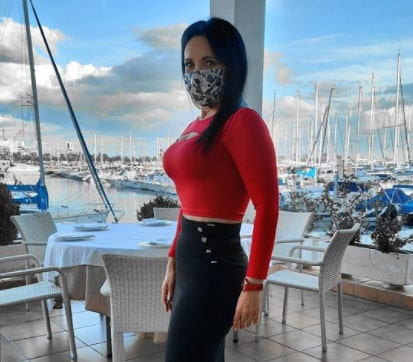
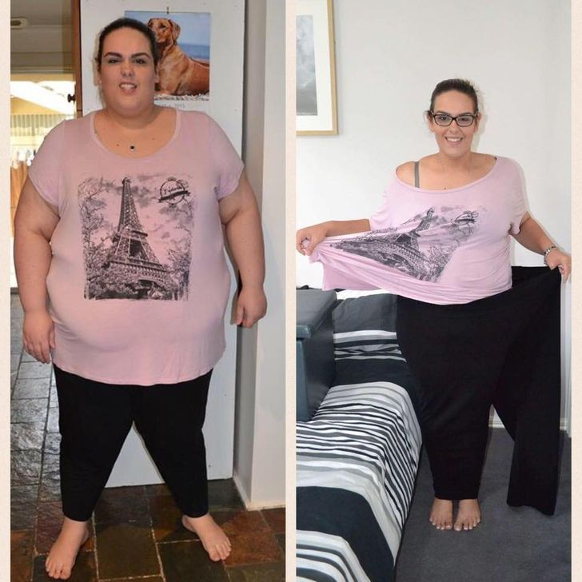
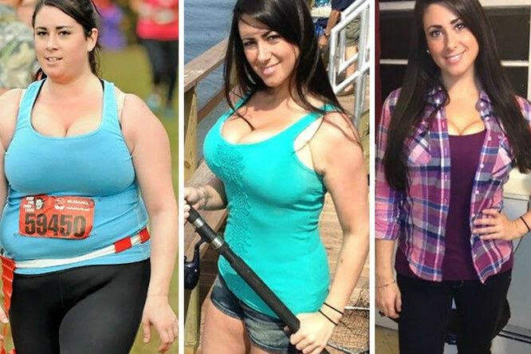
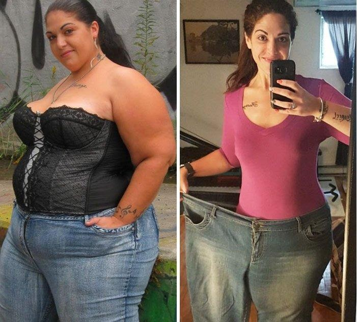
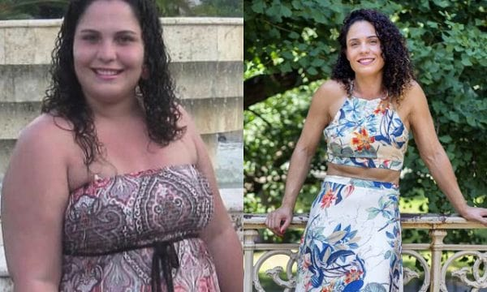
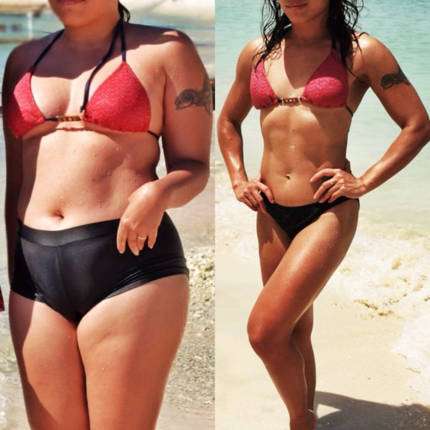

¡Después de los 50, la vida apenas comienza!
Acerca de mí: Mi nombre es María, tengo 52 años. Me divorcié a los 49 años después de 20 años de matrimonio y comencé una nueva vida en un cuerpo nuevo, comencé nuevos hobbies y relaciones. En mi blog, comparto consejos útiles para mujeres de 50 años.
Perdí fácilmente 30 kilos y comencé una nueva vida. Mi método para bajar de peso después de 50 años
Hoy quiero hablar sobre mi pérdida de peso, ya que una gran cantidad de lectores me preguntaron cómo logré bajar de peso a esta edad. Y como ya estaba bastante cansada de responder todas esas preguntas, decidí recopilar toda la información en un artículo y, en general, contar mi historia completa en detalle.


He tenido un peso inestable toda mi vida, en el sentido de que estaba perdiendo y ganando peso constantemente, y así sucesivamente en un círculo eterno.
Intenté bajar de peso de diferentes formas. He probado dietas mono: esto es cuando comes un determinado producto dietético para el almuerzo, el desayuno y la cena todos los días. Y esta es quizás la forma más estúpida de perder peso, pero no lo entendí de inmediato. En primer lugar, es una gran suerte si pudiste aguantar una dieta de este tipo durante más de dos días. Por lo general, lograba abstenerme para el primer par de comidas, pero por la noche, cuando estaba preparando la cena para la familia, me comía a escondidas algo de lo "prohibido". En segundo lugar, con una dieta de este tipo, el cuerpo no recibe los microelementos y vitaminas necesarios de los alimentos, por lo tanto, la apariencia también se deteriora: la piel, el cabello, las uñas sufren, toda la belleza femenina se evapora. Las fuerzas se van. Bueno, si aún logró soportar una semana o dos con una dieta de este tipo y perder diez kilos, en un futuro cercano estos mismos kilos regresaran. Y eso es si tiene suerte, por que a veces, la cantidad de kilos que aumenta es doble. Entendí esto por mi propia experiencia.
Traté de ir al gimnasio y tener una alimentación correcta. En el gimnasio me sentía incómoda, no sabía como usar los aparatos, en general tenía miedo de los entrenadores. Tenía la falsa impresion de que estos atletas despreciaban a los gordos débiles como yo. Suena tonto, pero esa fue la razón por la que nunca me quedé en el gimnasio. Ah, y una cosa más: cuando vas al gimnasio, tu apetito se vuelve simplemente brutal y es muy difícil controlarte. Y así, regresas a la casa después de un entrenamiento agotador y comes una porción doble de tu pechuga de pollo y de ensaladas dietéticas. ¿De qué tipo de pérdida de peso podemos hablar?
En general, a las madres de familia les resulta difícil adelgazar. Tengo dos hijos, mi esposo todavía estaba conmigo en ese momento. No iban a apoyarme y cambiar la comida de siempre a comida al vapor. Y para mí era difícil controlarme, y constantemente se me antojaba algo sabroso y graso que cocinaba para ellos.
Y con la edad, se volvió aún más difícil perder peso: los cambios hormonales relacionados con la edad se vieron afectados. No profundizaré en el tema, las mujeres me entenderán de todos modos. Las dietas ya no funcionaron y el peso solo aumentó y aumentó. En algún momento, ya me di por vencida, me resigné a mi cuerpo y abandoné todos los intentos de perder peso.
Esto fue hasta que mi esposo me dejó hace tres años. Se fue con una mujer joven y esbelta, y hasta me dijo en la cara que me descuidé y que el todavía era un hombre en sus mejores años. Fueron unas palabras muy duras para mí, teniendo en cuenta todos los años que pasamos juntos!
Quería demostrar que valía algo y que el se va a arrepentir en algún momento. Y volví a intentar perder peso. Esta vez un amigo vino en mi ayuda y me contó sobre W-loss. Desconfiaba de su historia, porque nunca confié en los medicamentos para bajar de peso. El hecho es que yo misma estudié medicina y sé que a menudo esos remedios resultan ser ineficientes o causan daños graves al cuerpo. Por lo tanto, al principio decidí estudiar toda la información sobre W-loss, consultar con otros especialistas. Tomé un frasco y fui a ver a un nutricionista.

Después de examinar la composición, el médico confirmó: este es un remedio realmente eficaz y seguro. Más sobre la composición:
- La remolacha acelera y activa el metabolismo, iniciando así el proceso de pérdida de peso.
- La naranja es un potente quemagrasas natural, aumenta el metabolismo varias veces, aumenta el intercambio de calor y aumenta el índice metabólico.
- La guaraná: ayuda a reducir el apetito, inicia el proceso de lipólisis (quema de grasa).
- La espirulina: mejora la inmunidad, limpia suavemente el cuerpo de cualquier toxina y reduce los niveles de colesterol.
- El extracto de pimienta negra: descompone los depósitos de grasa, quema calorías, acelera el metabolismo y alivia los problemas digestivos.
Como pueden ver, la composición de W-loss es completamente natural, todos los componentes actúan para disolver la grasa y ayudar a controlar el apetito. Después de asegurarme de que W-loss sea seguro y eficaz, decidí comenzar a tomar este remedio.
¿Qué más es importante para las mujeres durante la menopausia? W-loss ayuda a restablecer el equilibrio hormonal y suaviza todos los síntomas desagradables de este estado. Lo comprobé por mi propia experiencia: mi salud mejoró mucho, mis fuerzas y mi energía aumentaron considerablemente.
Es muy conveniente tomar W-loss: simplemente añadía unas gotas del medicamento al té o al agua y lo tomé media hora antes de las comidas. Esto le permite cortar la porción de comida aproximadamente a la mitad; la saturación ocurre mucho más rápido.
Para perder 100 kilos, solo me tomó tres meses y medio. El resultado es obvio.

Por cierto, mi esposo realmente notó el cambio. Incluso me pidío volver. Pero yo no perdono la traición.
Muchas mujeres que conozco usaron W-loss. Especialmente para ustedes, les pedí que me enviaran sus fotos de antes y después y escribieran una breve reseña:

“María, ¡muchas gracias por contarme sobre W-loss! Para mí bajar de peso era una cuestión de salud. Sufrí diabetes tipo 2 durante diez años, ¡pero después del curso de pérdida de peso con W-loss logré deshacerme de esta enfermedad! Y mi apariencia se ha vuelto mucho más agradable, por supuesto. ¡Recomiendo este producto a sus lectores!"
Carmen, 36 años

“¡W-loss es un verdadero hallazgo! Probé muchos remedios para bajar de peso, pero no pude lograr resultados: pierdo un par de kilogramos y el peso se detiene. ¡Y con estas gotas perdí 38 kilos en un par de meses y el peso ya no regresa!”.
Monica, 33 años

“¡Menos 64 kilos gracias a W-loss sin ningún problema!“
Margarita, 43 años
Además de todo lo mencionado anteriormente, W-loss tiene un efecto positivo en todo el cuerpo: mejora la calidad del cabello, la piel rejuvenece y las afecciones como la hipertensión y la diabetes desaparecen con el peso.
Ahora puede comprar W-loss con un 50% de descuento solo hasta el Simplemente deje una solicitud en el formulario oficial. ¡No se quede de brazos cruzados, haga un paso hacia el cuerpo de sus sueños!
Lea más historias de personas que perdieron peso con W-loss:

El remedio con el que todos pierden peso Leer mas…

La mejor forma de perder peso que he probado: menos 40 kilogramos y un cuerpo tonificado Leer mas…

Mi historia real de perder peso sin dañar la salud y la dieta. Leer mas…
Maria, en la foto es como si fueran dos personas diferentes! ¡Se ve genial!
¿Es Usted misma en la foto de antes y después? ¡En mi vida no lo hubiera pensado!
El divorcio claramente resulto algo bueno para Usted. Quién sabe, si ese desgraciado no le hubiera dejado, tal vez no se hubiera transformado tanto. ¡Bien hecho!
Estos si que son resultados ... ¡hay que consegir urgentemente W-loss, chicas! ¡Y todavía con descuento!
Siguiendo tu consejo (me respondiste en los comentarios), también tomé W-loss. Despues de un mes, el resultado es el siguiente:

Ordené W-loss, ¡ya he recibido el paquete!
Lo pediré para mi mamá como regalo de cumpleaños. Un regalo sin alusión, lleva muchos años intentando adelgazar, ya tiene 62 años, es duro, pesa 105 kilogramos
Mi hija y yo perdimos peso juntas con W-loss, ¡el mejor producto de pérdida de peso de todos! Mi resultado es -34 kilos, mi hija -15 kilos.
¡Es dificil reconocerla en su nuevo cuerpo! ¡Yo también quiero semejante transformación!
¡Que mujer bonita eres, María! Y el marido, que se vaya al infierno y se muerda los codos
Es la segunda semana que estoy tomando W-loss, el resultado es genial: me quedo bien un vestido que usé hace cinco años :D